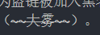

前情提要
说出来你可能不信，笔者常年不知道如何在hexo里面上传图片，导致有些图片都是网上找的，不仅不稳定，时不时还会因为盗链被加入黑名单。现在说起来可真是一段血泪史啊。于是笔者看今天天气不错（大雾），决定搞一波图片。
话说现在的vs-code的markdown插件可真是奇怪他竟然把我的源代码给渲染了…

## 方法
### 传统方法
在markdown中常用的链接图片的方式是
1 |  |
我们要不把图片传到图床，
### hexo方法
#### 文件放在哪
但是我们今天用的是hexo，可以把本地的一些文件传到hexo博客在你的托管文件夹里面。
我们有两种方法
传到source文件夹中然后用相对路径访问它。 传到与你的markdown同名的文件夹里，然后用相对路径访问它。
毫无疑问，前一种方法存在命名空间混乱而且路径较长的问题，我们选择无视。
#### 开启自动创建文件夹
在hexo中，我们在没有hexo_gui的情况下，我们会使用
hexo new xxx来创建md文件。如果我们把hexo配置文件中的
post_asset_folder选项配置为true，就可以在使用new命令时自动生成对应的文件夹。我们把图片放在里面就会一起上传。#### 在hexo使用文件夹里的图片
我们依然使用
来创建图片链接。此时我们的编辑器会提示补全,以本文为例，会被补全为1 |  |
我们试着使用本地测试的方式于是我们会发现图片，在编辑器里被加载出来了，在博客中没有被加载出来，于是我们怀疑hexo在上传时改变了文件夹的结构。于是我传到了github上去试了一试，果不其然，发现图片与博客被解析到了同级文件夹中。于是正确的使用方法是
1 |  |
虽然很遗憾的是编辑器的预览里面看不见这玩意。
当然使用hexo独有的插入图片的语法也是一样，需要使用相同的技巧。
当然在我目前的3.0版本这两种语法的效果是一样的…
## 居中显示
如果一个图片比较小的话，在markdown里面直接插入是很难看的。
但是markdown支持html语法。于是我们可以把
改为1 | <div align=center> |
效果如下
—
当然我现在使用的编辑器并不能预览会把命令解析为文字，但在hexo中亲测可用。
编辑器中，我看见的预览是↓
那也是没办法的事嘛。md普通话和方言之间确实有所差异。